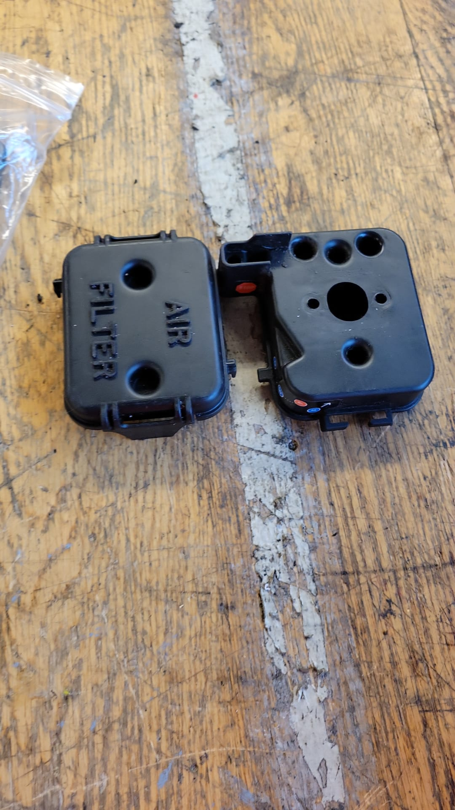

In this design project, my team of 5 students completed a full reverse engineering process on a weed trimmer. We disassembled the trimmer into its individual components, modeled each part in Solidworks, and then virtually reassembled the entire unit. This project gave me hands-on experience taking apart complex machinery, developing detailed CAD models, and gaining understanding of how all the components interconnect. Through collaborating with my peers and combining our Solidworks skills, we were able to recreate an accurate visual representation of the original physical weed trimmer. Our final deliverable included an animated video depicting the step-by-step virtual reassembly. This project enhanced my skills in reverse engineering, 3D modeling, and technical visualization. It also taught me important lessons in project coordination, teamwork, and effectively communicating engineering concepts.
rhrb